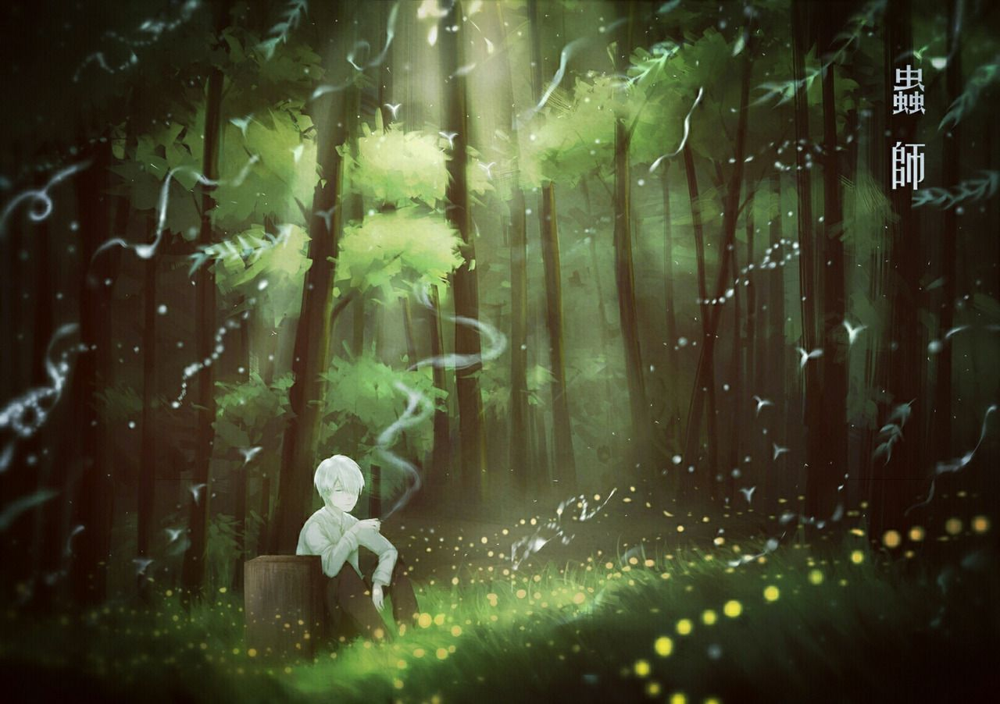
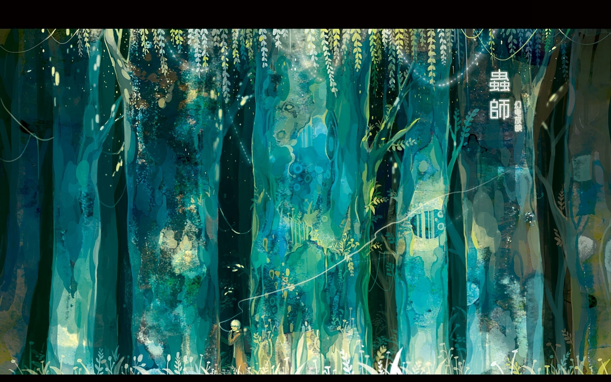
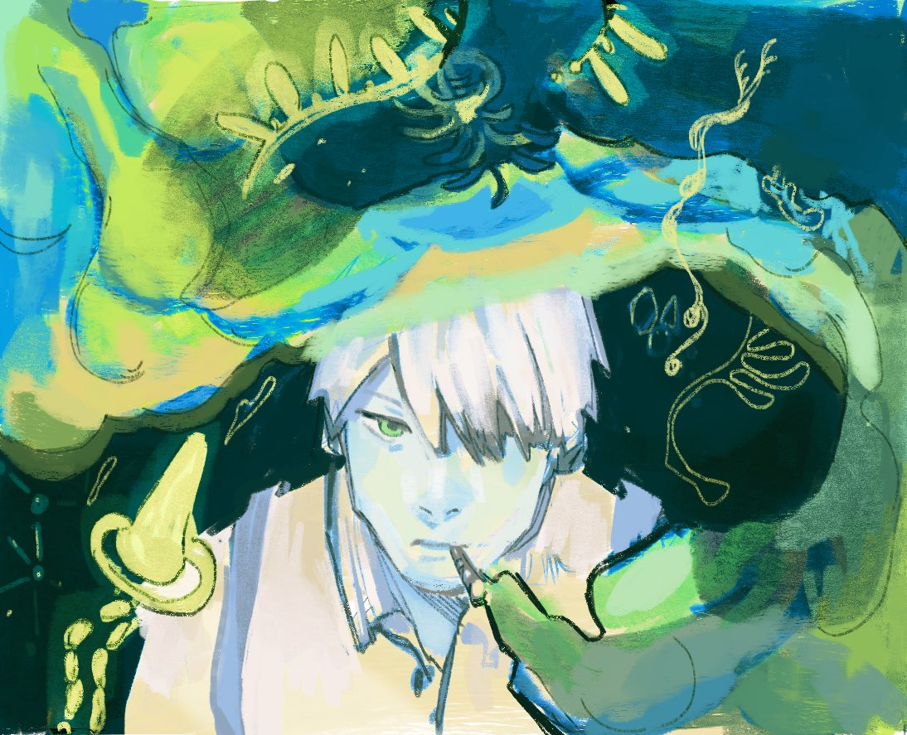

Thông tin truyện
Mushishi
Tác giả
Yuki Urushibara
Phát hành bởi
Kodansha
“ Mặt trời lên rồi lại lặn, Bông hoa kia sớm nở tối tàn. Ánh dương tuy giấu mình nhưng vẫn dậy, Phiến hoa này đâu phải thứ hương xưa.”
 Lần đầu tiên tôi được chìm vào trong khung cảnh trong xanh của một miền đất xa xôi với thời gian vô định, là khoảng ba năm về trước, khi tôi nằm trên ghế dài, trên chuyến xe khách chạy từ thủ đô lên sapa. Một lòng háo hức lạ kì, tôi thật nhanh muốn thoát ra khỏi bụi bặm thường nhật, lao thật nhanh vào rừng cây sâu thẳm. Chưa ai hỏi liệu tôi muốn sống ở đâu, sống như thế nào, nhưng có vẻ như đất trời đã thấu hiểu và đáp lời tôi, qua khung cửa sổ của chiếc xe đang từ từ vượt dốc với những cú rung lắc bất chợt và cung đường gập ghềnh.Cchiếc ipad trong tay tôi, lúc đó bất ngờ nhảy sang một bộ phim hoạt hình mới, tôi không nghĩ đó là tình cờ, bởi tôi đã được gặp anh, người đã dẫn tôi đi vào thế giới xanh biếc ấy. Ginko, người cũng như tên, sở hữu mái tóc bạc màu che khuất đi con ngươi bên trái. lai lịch không rõ ràng, người ta chỉ biết anh với dáng điệu của một thầy thuốc đi khắp nơi tìm bệnh. xung quanh anh tỏa ra một thứ hào quang dịu nhẹ, che lấp đi vẻ bí ẩn và nội tâm ẩn khuất. ginko đi khắp nơi, trên vai đeo thùng gỗ, tới từng ngôi làng hẻo lánh, từng khu rừng sáng tối âm u. theo bước chân anh, thiên nhiên đất nước nhật đã hiện ra muôn màu và trong trẻo như thế. xuân, hạ, thu, đông, ngày mưa tháng nắng, lá đọng sương tan, hồ nước bóng nắng, mỗi khung cảnh đều gây choáng ngợp bởi độ tỉ mỉ trong chi tiết và màu sắc sử dụng. nếu bỏ qua yếu tố nội dung, đây có thể trở thành một cuốn phim tài liệu về vẻ đẹp hoang sơ nơi xứ ấy. nhưng hãy đừng quên người dẫn dắt ta trên đường, bởi anh chính là điểm nhấn của toàn bộ câu chuyện.  Ginko mang danh thầy thuốc, nhưng thực chất anh mang một năng lực kì lạ, đó là có thể nhận biết và tiếp xúc với những sinh vật nhỏ bé trong không khí mà người thường không thể thấy. chúng là tác nhân gây ra những biến đổi của tự nhiên và con người, kể cả những rắc rối. mushi là cách người ta gọi chúng, và mushishi chính là những người sở hữu năng lực như của ginko, những vị trùng sư quyền năng. sự hiện diện của vô vàn loài mushi khiến ta nhận ra, trên thế giới này, cỏ cây, chim chóc, hươu nai, con người chúng ta không hề cô độc. chúng cũng là một phần của vòng tuần hoàn sự sống, cũng là một phần của quá trình tiến hóa và phát triển. chúng biết cách sinh sôi, nảy nở, biết náu mình, biết cảm nhận thế giới xung quanh, cũng có cái gọi là nguồn cội. vậy ginko và những người như anh ấy, có vai trò gì trong dòng chảy này. có thể anh miệt mài đi chữa chạy cho người bị mushi gây bệnh, có thể anh tìm cách ngăn chúng gieo hồng thủy, thiên tai. hoặc có thể, trong thâm tâm, anh chỉ muốn cùng chúng, khẳng định sự tồn tại trên cuộc đời, cùng ngắm nhìn thế gian rộng lớn, và đi sâu vào tiềm thức của cội nguồn. con mắt trái của anh, không ai nói, nhưng đều biết đó là do mushi gây ra, nhưng vậy thì sao chứ, nguời đàn ông này chưa từng có ý muốn trả thù để hủy diệt một sự sống nào. tôi tự hỏi liệu anh có như tôi, có tha thiết yêu thương cái cuộc đời nay đây mai đó, để lạc mình vào không gian và thời gian vô định.  Quay trở lại thiên nhiên in dấu bước chân người thầy thuốc, tôi cảm giác như tác giả và người làm phim này, muốn đưa đến cho tôi một dạng thông điệp về thời gian. tôi cứ bị ám ảnh bởi hai chữ “tồn tại”, bởi từ ngữ đó đã nói lên rất nhiều về bộ phim. người dân bình thường khi bị mushi quấy nhiễu, có người lo lắng, hoảng sợ, có kẻ lại thật bình thản và chấp nhận đó là một phần của số phận, chấp nhận sự hiện diện của mushi. con người, mặc nhiên không thể cưỡng lại sự hấp dẫn của dòng komiyaku đầy quyền năng, ẩn dụ cho dòng thời gian không thể nắm bắt. cái cách mà ginko và mọi người trong phim ứng xử với cuộc đời của chính họ, có phần gì đó giống với phản xạ của tự nhiên. không ồn ào, căng thẳng, bí bách, con người nơi đây cứ bình lặng như thế, đầy suy tư như thế. Vòng tuần hoàn của sự sống cứ như vậy diễn ra, tạo thành khúc ca của chiếc lá, hơi thở của thu phong, nhẹ nhàng tựa mình trên đôi vai của người con trai ấy. liệu chúng có cảm thấy bình yên giống như tôi khi nằm trên chuyến xe hướng về miền xanh thẳm nọ?